ORGANIZERS
 

Elon Musk曾說過A.I.－human symbiote，指人工智慧與人類的共生體。這個前瞻性的想法結合了AI與基因科學，由於人腦的能力其實遠超於電腦，但人腦的思維數據量太大、「輸入與輸出」能力有限。若腦中能增加一個介面，連接人腦與電腦就可以大幅省下傳輸成本，直接將想法傳遞給任何人或物，達到傳播與媒介使用上的「心電感應」。
未來，人與機器人的界線日益模糊，但彼此共生相依。透過良好的HCI設計能夠讓人們可視化、預見人機共生的場景。
Human-Computer Interaction(HCI) 為近年來相當活躍的跨領域學門。相較於其他專門領域，HCI 學門獨特的複合特性，使得其創造過程需要高度的跨領域合作。研究的著眼點不但訴求技術、更試圖從以人為本的角度去探討，以創造更佳的使用者經驗。
OpenHCI'19 是第十屆由學生自治籌備的人機互動工作坊，旨在推廣人機互動學門與跨領域合作。 在六天的工作坊期間，來自不同領域的學員會經歷一系列講座與課後實作演練，深入完整 HCI 設計流程，透過合作溝通以實踐構想，將無盡的創意展現給世界！
本活動希望能夠以推廣 HCI 為主要宗旨，招收工程與設計背景的學生、共同學習並進行跨領域的合作，探索人類生活空間中與周遭環境、物件或工具的互動模式。為期六天的工作坊，期盼參與者能以此概念體察其日常經驗裡的互動缺口或議題，實際動手解決問題或創造出新的意義的能力，進而尋思更和諧的人機互動遠景。
08:30 - 09:00 學員報到
09:20 - 09:30 開場
09:30 - 10:30 Lo-fi Prototyping
10:30 - 10:40 中場休息
10:40 - 11:40 互動技術課程 I
11:40 - 13:00 午餐時間
13:00 - 14:30 互動技術課程 II
14:30 - 14:40 中場休息
14:40 - 16:30 設計思考流程
16:30 - 18:00 討論
08:30 - 09:00 學員報到
09:00 - 09:30 開場及開幕致詞
09:30 - 10:30 演講 I
10:30 - 10:50 中場休息
10:50 - 11:50 演講 II
11:50 - 13:00 午餐時間
13:00 - 15:40 創意發想
15:40 - 16:00 中場休息
16:00 - 17:00 Lo-fi Prototyping
17:00 - 18:00 討論與分享
08:30 - 09:00 學員報到
09:00 - 09:30 前情提要與分享
09:30 - 10:30 演講 III
10:30 - 10:50 中場休息
10:50 - 11:50 演講 IV
11:50 - 13:00 午餐時間
13:00 - 15:30 設計實作
15:30 - 16:00 中場休息
16:00 - 17:30 期中提案
17:30 - 17:50 評審總評
17:50 - 18:30 綜合討論
08:30 - 09:00 報到
09:00 - 09:30 前情提要與分享
09:30 - 10:30 演講 Ｖ
10:30 - 10:50 中場休息
10:50 - 11:50 演講 VI
11:50 - 13:00 午餐時間
13:00 - 17:00 設計實作
17:00 - 18:00 數位製造與互動原型製作
08:30 - 09:00 報到
09:00 - 10:30 實作時間
10:30 - 10:40 各組展場報到
10:40 - 12:00 佈置互動會場
12:00 - 13:00 午餐時間
13:00 - 13:10 互動會場開場
13:10 - 15:30 各組成果發表
15:30 - 17:30 互動成果展示
17:30 - 18:30 頒獎&閉幕式
18:30 - 19:00 場復
【 活動時間 】
活動時間分為兩個階段，總共5天：
1. 2019 年 8 月 04 日 (日) ：前置工作坊
人機互動先修班，學習基礎的Arduino使用，以及設計思考的流程，在與組員初步接觸後，開始探索周遭可能的不平凡
2. 2019 年 8 月 21 日 (三) ~ 2019 年 8 月 24 日(六)
人機互動實戰班，聆聽相關領域先驅者的演講，認識人機互動的不同面向；與組員攜手合作挖掘出瘋狂而美麗的可能，並將之轉化為現實；成果展示跟各界人士互動與對話，精益作品以期到更寬廣的舞台展示
每日活動開始時間皆為 09:00，結束時間為 18:00 – 18:30 不等。
【 活動地點 】
國立臺灣科技大學（10607臺北市大安區基隆路四段43號）
【 活動費用 】
為推廣HCI學門，本活動僅收保險費，獲得錄取資格之學員，請於指定時間內繳交保證金新台幣1000元以及保險費用100元
，繳費後方能取得正式資格。為維持學習的完整性，學員獲選後需全程參與。
依出席簽到為準，全程參與者，保證金將於工作坊結束後全額退還。
註：活動中之住宿及早午晚餐，學員需自行尋找與負擔費用。
【 報名資格 】
全國各大專院校升大三以上在學生，含學碩博應屆畢業生及新生。
【 報名方式 】
一律填寫線上表單報名。本活動以報名資料填寫內容作為錄取參考依據，報名先後順序不列入計分標準。
【 線上報名時間】
2019 年 6 月 16 日 (日) 21:00 至 2019 年 7 月 08 日 (一) 23:59'59
報名表單包含「資料填寫」和「「IDCard 製作」兩部份：
1. 「資料填寫」包含個人基本資料、相關經歷等內容。
2. 「IDCard 製作」內容包含 「個人簡歷」 、「作品集」與「問題回答」，
請將檔案附件於表單最後的「檔案上傳」欄位。
1. IDCard
檔案請依製作內容說明自行製作與編排，並輸出一份三頁之A4橫式PDF檔。
2. IDCard 檔名格式： IDCard_姓名 (範例：IDCard_王曉明)。
3. 若檔案格式或檔名格式不符，造成漏檔，報名者請自行負責。
第一頁｜個人簡歷：請放個人簡歷，表達格式不限。
第二頁｜作品集：請放上個人最滿意的作品（研究、專題、設計皆可），可透過文字、圖片或另附影片表達。
第三頁｜問題回答：請從你的經驗中去發想並回答以下兩問題，可透過文字、圖片或另附影片表達，數量、格式均不限。
1.
請從自己與周遭環境中接觸到的物體中（包括有機物、無機物、有生命/無生命的物體、單一/群組的物體），擇一自己最喜歡或印象深刻的例子，簡述這項物體並描述認知或相處的經驗。
2.
本次活動主題為「共生體Symbiote」請你想像我們能如何讓媒體和機器無形、無感地融入人們的生活，在技術中根植人文的關懷，而非被機器的功能設限，透過設計思考步驟發想和設計出人機共生的互動載體。
請描述一例，具體描述內容包括：
a. 那項日常物品為何。
b. 這新賦予的生命意義為何。
c. 「它」與人會有什麼樣的互動。
【正取名單公佈】
6 月 16 日 (日) 10:00 網路公佈與信件通知
正取學員請於 7 月 15 日 (一) 17:00 前
繳交1000元保證金以及100元保險費用，主辦單位確認報名與匯款資料後完成報名。
未依照指定報名期限內完成報名程序者，視為放棄報名資格，會依據備取順序遞補。
【遞補備取通知】
7 月 15 日 (一) 個別信件通知
經通知錄取的備取學員於 7 月 18 日 (四) 17:00 前 繳交 1000
元保證金以及 100 元保險費用以
完成報名程序。
主辦單位將於 7 月 18 日 晚上公佈學員最終正式名單。
關於報名有任何問題，歡迎寄信與主辦單位人事組聯絡：human@openhci.com
台灣人機互動研討會 TAICHI 為臺灣人機互動學會的年度會議，為國內跨領域人機互動學者與社群，提供一個代表台灣人機互動(Human Computer Interaction)研究最前緣之意見交換以及成果交流的年度盛會。
TAICHI 2018 (第四屆台灣人機互動研討會)由人機互動學會主辦，並持續各領域、校、院間的合作，由交大、台大、清大、政大、台科大、輔大等大專院校之人機互動相關學者共同籌辦，於 8 月 26 日至 28 日在國立交通大學舉辦。此次大會主題為「Bang」，旨在產學、師生、專業人士們之間產生激盪與火花，讓 2018 成為台灣人機互動成長重要的一年。
你想要讓自己的作品在台灣人機互動年度盛會 TAICHI 被看見嗎？
TAICHI 是台灣人機互動研究領域中最具代表性的研討會，由台灣人機互動學會所舉辦的年度會議，為國內跨領域人機互動學者與社群，提供一個意見交換以及成果交流的年度盛會。
OpenHCI 工作坊結束之後，OpenHCI 將推薦各組成果作品至 TAICHI 年會展示，除了學員能夠於會議中發表自己的作品、增加曝光度外，也有機會跟眾多國內外 HCI、UXD 專家交流，不管是向學界、業界前輩取經，或是互相分享經驗，相信對學員的未來求學或工作都有相當大的幫助。
除此之外，參展隊伍所有成員都可以免註冊費參加 TAICHI 會議期間各場次活動喔！這麼難得的機會，只有 OpenHCI 學員才有呢～
